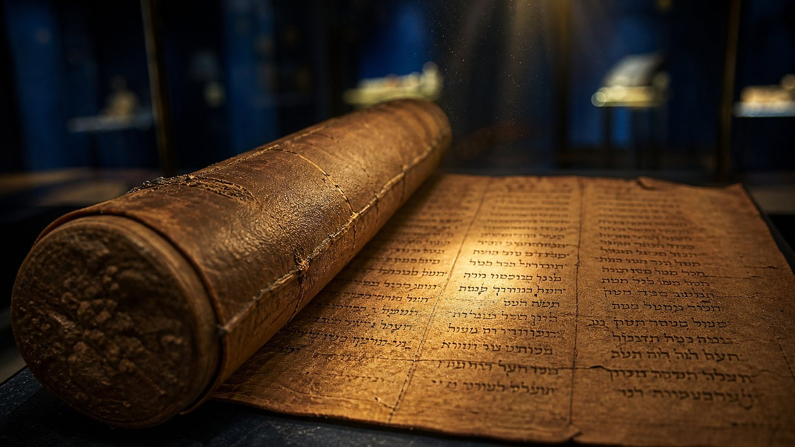

Grand rouleau d’Isaïe (1QIsa a)
Les 66 chapitres d’Isaïe, y compris les passages qui nomment Cyrus (44:28 ; 45:1), sont attestés au moins deux siècles avant notre ère, quasi identiques au texte massorétique.
Notice de référence (site externe)
Salle 01 sur 17
Les critères qui distinguent une annonce authentique d’une prédiction après coup.
Le défi
Prédire l’avenir, tout le monde peut le prétendre. Ce qui distingue une prophétie véritable d’une simple supposition, c’est qu’elle s’expose : elle est écrite, elle est précise, et l’histoire peut lui donner tort.
Les écrits bibliques ne fuient pas cette épreuve, ils la réclament. Dans le livre d’Isaïe, Jéhovah met les dieux des nations au défi d’annoncer ce qui arrivera. La loi de Moïse, de son côté, donne un critère simple pour démasquer un faux prophète : sa parole ne se réalise pas.
… déclarez les choses qui vont arriver dans la suite, et nous saurons que vous êtes des dieux ; oui, faites du bien et faites du mal, afin que nous le considérions et le voyions ensemble.
Et si tu dis dans ton cœur: Comment connaîtrons-nous la parole que Jéhovah n’a pas dite ? Quand le prophète parlera au nom de Jéhovah, et que la chose n’aura pas lieu et n’arrivera pas, c’est cette parole-là que Jéhovah n’a pas dite ; le prophète l’a dite présomptueusement: tu n’auras pas peur de lui.
Banc d’essai
Choisissez une annonce, puis lancez le test. Les mêmes critères s’appliquent à toutes, qu’elles viennent de la Bible ou d’ailleurs.
Un conquérant appelé par son nom, qui ouvrira des portes et fera rebâtir Jérusalem et son temple.
Le texte existait-il, de façon démontrable, avant ce qu’il annonce ?
Isaïe prophétise au viiie siècle av. n. è. Matériellement, le grand rouleau d’Isaïe de Qumrân (iie s. av. n. è.) contient déjà ces versets. Une partie de la critique situe toutefois les chapitres 40 à 55 vers l’époque de l’exil (voir l’encadré DÉBATTU).
Donne-t-elle des noms, des lieux, un ordre ou des détails qui ne s’appliquent qu’à un seul événement ?
Un nom propre, Cyrus ; des portes qui ne seront pas fermées ; la reconstruction de Jérusalem et des fondations du temple.
Son auteur était-il incapable de provoquer lui-même l’accomplissement ?
Un prophète de Juda ne pouvait ni faire naître un roi perse, ni lui faire prendre Babylone, ni lui dicter sa politique envers les exilés.
L’accomplissement est-il attesté par des sources indépendantes : archéologie, chroniques, historiens ?
Le cylindre de Cyrus et la chronique de Nabonide rapportent la prise de Babylone en 539 av. n. è. et le retour des populations déplacées.
Pourrait-elle échouer, et a-t-elle tenu ? Une annonce vraie dans tous les cas ne prouve rien.
L’annonce pouvait échouer sur chaque point. Babylone tombe en 539 av. n. è. ; les exilés juifs rentrent en 537 av. n. è.
5 critères sur 5 Les cinq critères sont remplis. Le premier fait l’objet d’un débat de datation, exposé honnêtement plus bas.
| Critère | Cyrus nommé à l’avance | L’oracle de Delphes et Crésus | Les quatrains de 1555 |
|---|---|---|---|
| 1. Écrite avant l’événement | Rempli Isaïe prophétise au viiie siècle av. n. è. Matériellement, le grand rouleau d’Isaïe de Qumrân (iie s. av. n. è.) contient déjà ces versets. Une partie de la critique situe toutefois les chapitres 40 à 55 vers l’époque de l’exil (voir l’encadré DÉBATTU). | Rempli Selon Hérodote, la réponse est donnée avant la guerre, vers 547 av. n. è. | Rempli L’édition de 1555 est datée et conservée. |
| 2. Précise | Rempli Un nom propre, Cyrus ; des portes qui ne seront pas fermées ; la reconstruction de Jérusalem et des fondations du temple. | Non rempli « Un grand empire » : lequel ? La formule ne désigne ni vainqueur ni vaincu. | Non rempli Vocabulaire symbolique, anagrammes, peu de noms et presque aucune date explicite. |
| 3. Hors du contrôle de son auteur | Rempli Un prophète de Juda ne pouvait ni faire naître un roi perse, ni lui faire prendre Babylone, ni lui dicter sa politique envers les exilés. | Rempli La prêtresse ne commandait aucune armée. | Rempli L’auteur n’avait aucun pouvoir sur les événements des siècles suivants. |
| 4. Vérifiable | Rempli Le cylindre de Cyrus et la chronique de Nabonide rapportent la prise de Babylone en 539 av. n. è. et le retour des populations déplacées. | Partiel La défaite de Crésus est un fait historique ; mais l’énoncé aurait été déclaré « accompli » quel que soit le vainqueur. | Non rempli Le sens est presque toujours attribué après coup, et un même quatrain reçoit des interprétations concurrentes. |
| 5. Jamais démentie | Rempli L’annonce pouvait échouer sur chaque point. Babylone tombe en 539 av. n. è. ; les exilés juifs rentrent en 537 av. n. è. | Non rempli L’annonce ne pouvait pas échouer : elle était vraie dans tous les cas. C’est précisément ce qui lui ôte toute valeur de preuve. | Partiel Le rare quatrain explicitement daté (X, 72 : « l’an mil neuf cens nonante neuf sept mois ») n’a été rattaché à aucun événement faisant consensus. |
Critère n° 1
Une prophétie rédigée après l’événement n’en est pas une. Le premier travail consiste donc à dater les textes, et les meilleurs témoins sont les manuscrits eux-mêmes.
Les livres bibliques ont été recopiés à la main pendant des siècles. Longtemps, les plus anciens manuscrits hébreux complets connus dataient du Moyen Âge, ce qui laissait de la place au soupçon : et si les « prophéties » avaient été retouchées après coup ?
Entre 1947 et 1956, les grottes de Qumrân, au bord de la mer Morte, ont livré des centaines de manuscrits, dont des copies d’Isaïe et de Daniel antérieures à notre ère. Le texte qu’elles transmettent est, pour l’essentiel, celui que nous lisons aujourd’hui.
Les 66 chapitres d’Isaïe, y compris les passages qui nomment Cyrus (44:28 ; 45:1), sont attestés au moins deux siècles avant notre ère, quasi identiques au texte massorétique.
Notice de référence (site externe)Popović et al., PLOS One, 2025 : le fragment 4Q114 (Daniel 8-11) est daté par le carbone 14 de 230-160 av. n. è. Les auteurs notent que cette plage recoupe les années 160, où la majorité des chercheurs place la rédaction finale du livre. Le livre circulait donc au plus tard vers 160. Le musée suit la datation que le livre donne de lui-même (vie s.) en signalant le débat.
Notice de référence (site externe)Prescience
Si Dieu annonce l’avenir, chaque vie est-elle écrite d’avance ? La Bible ne présente pas les choses ainsi. Elle ne précise pas jusqu’où Jéhovah choisit de connaître l’avenir, et il serait imprudent d’être catégorique à ce sujet. Elle montre en revanche une chose essentielle : lorsqu’il annonce un événement, il a le pouvoir de le faire arriver.
Il n’a donc pas besoin de « regarder » un avenir déjà figé. Comme un potier qui façonne l’argile, il décide qu’une chose se produira, au moment voulu, et il l’accomplit.
Cela laisse toute sa place au libre choix des humains. Quand les habitants de Ninive ont changé de conduite, le malheur annoncé ne les a pas frappés. Et Cyrus, nommé à l’avance, a servi le dessein annoncé sans être forcé d’adorer Jéhovah.
… déclarant dès le commencement ce qui sera à la fin, et d’ancienneté ce qui n’a pas été fait, disant: Mon conseil s’accomplira, et je ferai tout mon bon plaisir, appelant du levant un oiseau de proie, d’un pays lointain l’homme de mon conseil. Oui, je l’ai dit, et je ferai que cela arrivera ; je me le suis proposé, et je l’effectuerai.
Et Dieu vit leurs œuvres, qu’ils revenaient de leur mauvaise voie ; et Dieu se repentit du mal qu’il avait parlé de leur faire, et il ne le fit pas.
Mode de visite
La prophétie citée mot pour mot (Darby 1885), avec les deux numérotations de versets quand elles diffèrent.
Quand le texte a-t-il été écrit ? Les débats de datation sont signalés, jamais passés sous silence.
Ce que l’histoire rapporte, avec les dates admises par les historiens et, lorsqu’elle diffère, la chronologie biblique.
Objets, inscriptions et récits anciens, avec leur lieu de conservation et leur numéro d’inventaire.
Fait archéologique, donnée historique, lecture prophétique ou point débattu : vous savez toujours ce que vous lisez.